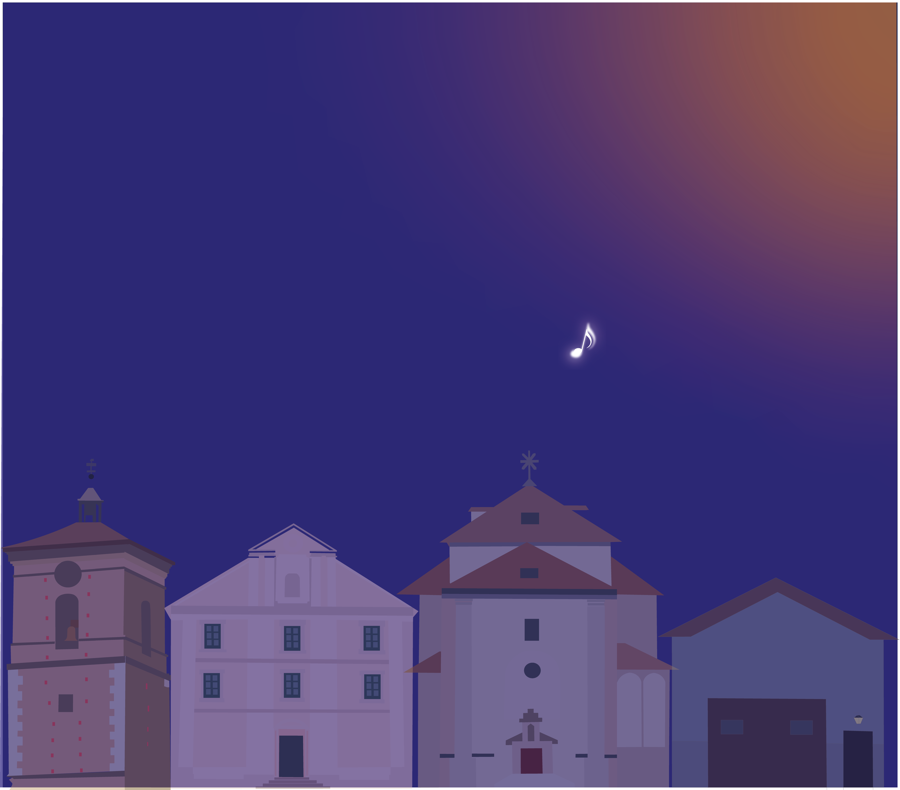
Noches de Verano
Festival identity
How might we help young people in Madrid explore who they are, before deciding what they want to be?
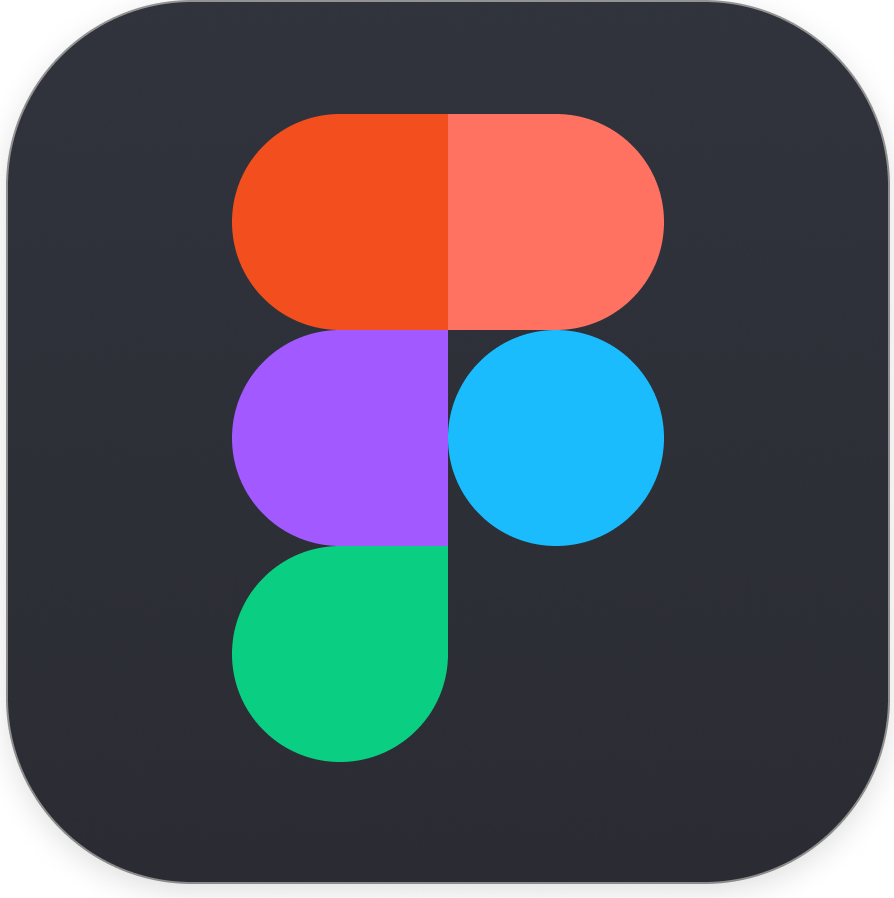
Método MAD is a vocational guidance app designed for the Ayuntamiento de Madrid. MAD stands for Mapea, Aprende, Decide — and doubles as a nod to Madrid's code. It aims to help teenagers aged 16–20 discover their strengths, values, and possible paths through games, not forms — because we believed that self-knowledge shouldn't feel like a test.
The project started with a clear gap: there was no platform in Spanish designed specifically for teenagers that combined gamification, emotional connection, and longitudinal support in one place. From there, the process covered desk research with real data sources, competitive analysis, two user personas, empathy mapping, problem definition, user flows, and a mid-fidelity interactive prototype built in Figma — from the first statistic to the final screen.
This is not a finished product. It's a living project — one that raises more questions than it answers, and that's exactly the point. The prototype is a starting point, not a conclusion. There are features we didn't build, needs we didn't fully cover, and decisions we'd revisit with more time and real user testing. But it's an honest record of a process, and a direction we believe in.
Before touching Figma, we looked at what was actually happening. Three findings shaped the whole project.
39%
of Gen Z feel anxious frequently
About important decisions — more than double the rate of Boomers.
(Barna Group)
114K
young people guided by Oficina Joven
In Madrid in 2024–25 — only in person, no digital platform available.
91%
of Gen Z want work with real purpose
Aligned to their values — not just a job.
(Deloitte Spain)
Competitive analysis
| Platform | Gamified | In Spanish | For teens |
|---|---|---|---|
| TestVocacional.app | ❌ | ✅ | ~ |
| Strive (AI) | ~ | ❌ | ~ |
| ASPA Madrid | ❌ | ✅ | ✅ |
| Euroguidance España | ❌ | ✅ | ~ |
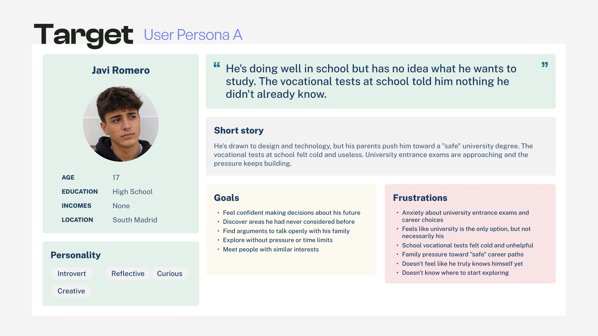
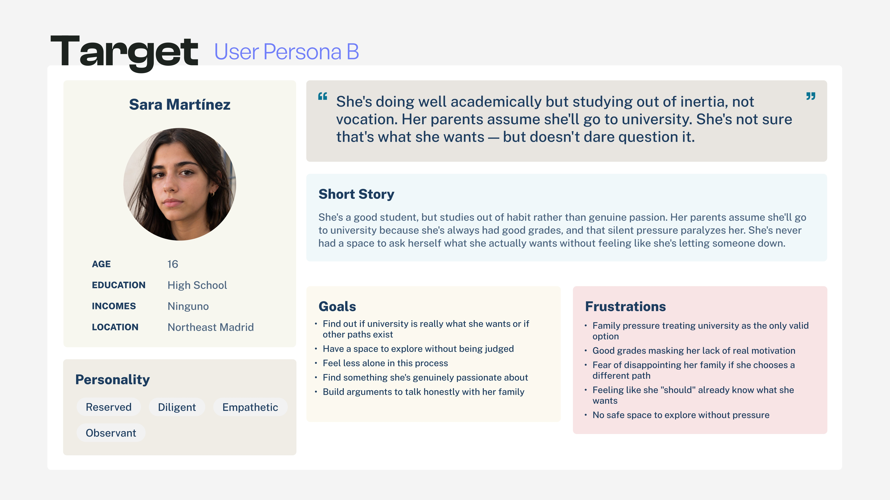
Beyond the personas, we mapped the emotional landscape — what they think, feel, say and do when facing vocational decisions.
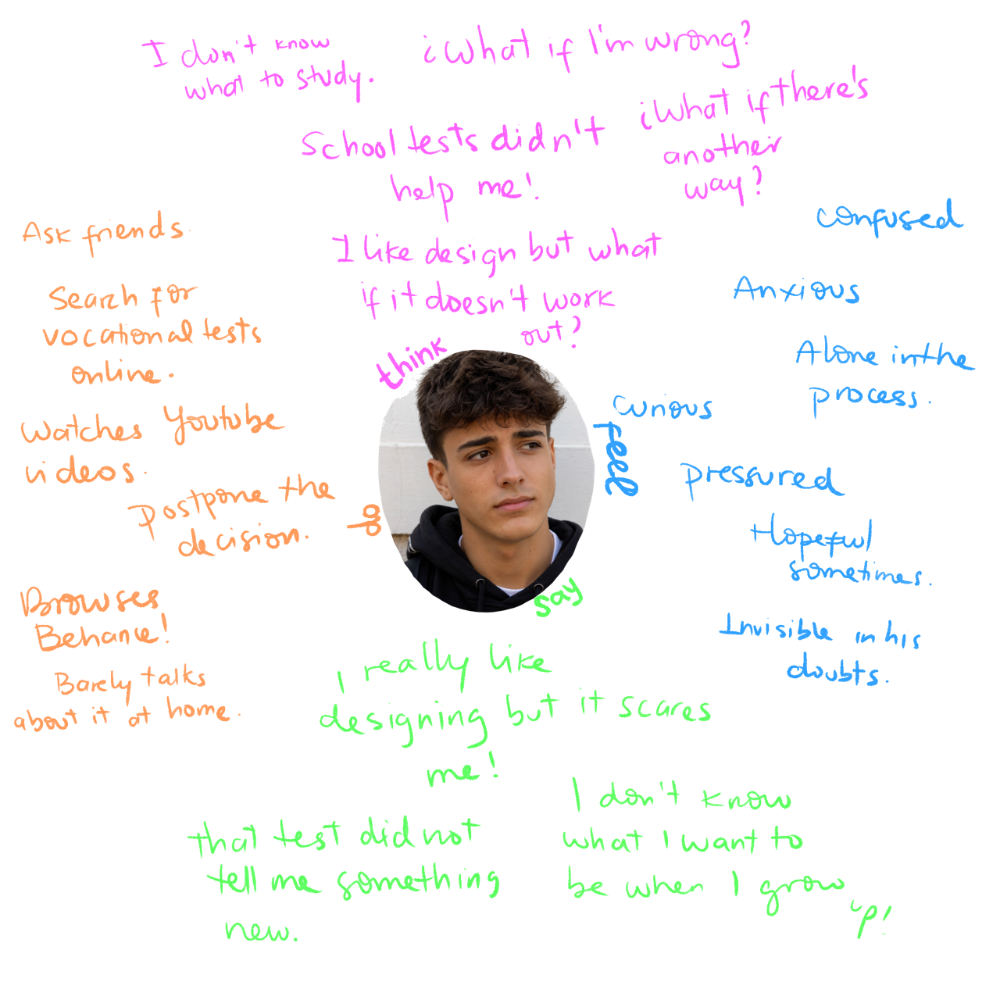
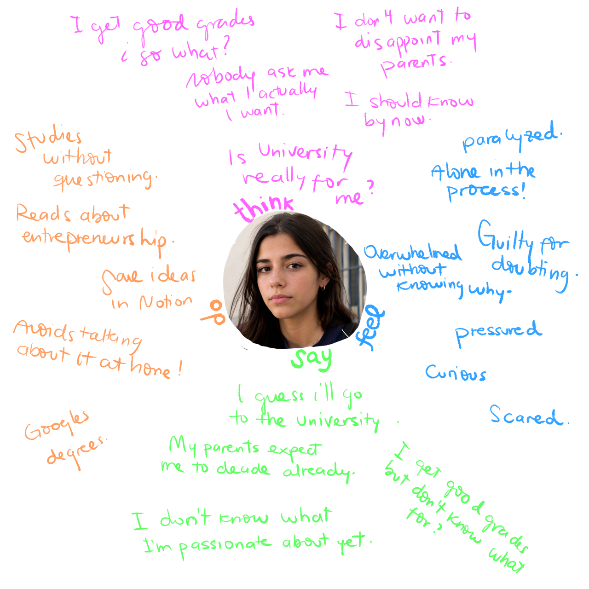
Empathy maps — Javi & Sara
How might we help teenagers aged 16–20 in Madrid explore their identity, strengths and values progressively and without pressure — so they can make more conscious decisions about their future, whether that's university, entrepreneurship or autonomous learning?
Existing tools treated vocational guidance as a one-time test. Método MAD wants to treat it as an ongoing process — something that grows with the user over months, not minutes. We also identified a key insight: vocational guidance can be a form of mental-health prevention, not a response to a crisis.
Método MAD works through daily micro-games, a progressive vocational profile and three equal paths — Formación, Emprende, Aprende — none treated as better than the others. The more you use it, the more it knows about you. Distribution matters too: the app is reached through the Ayuntamiento's youth portal, where young madrileños already look for guidance.
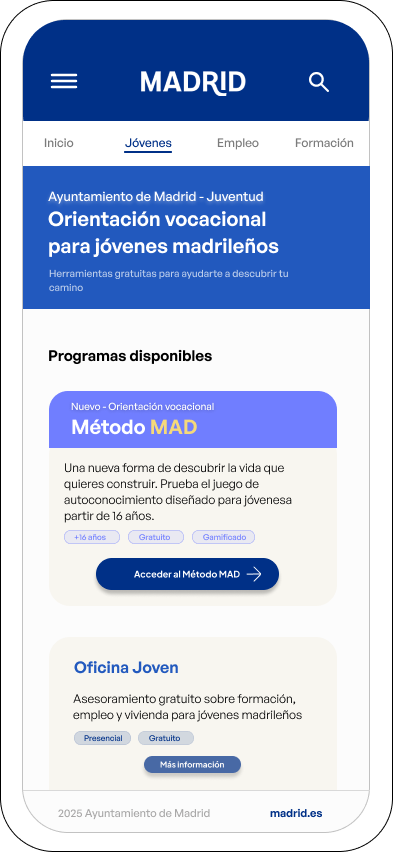
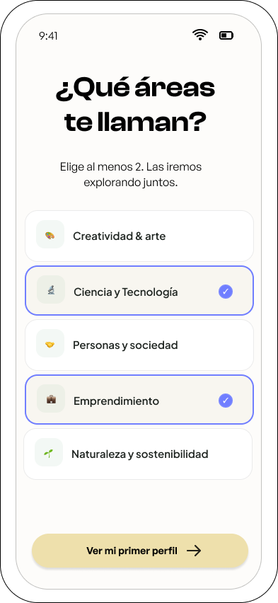
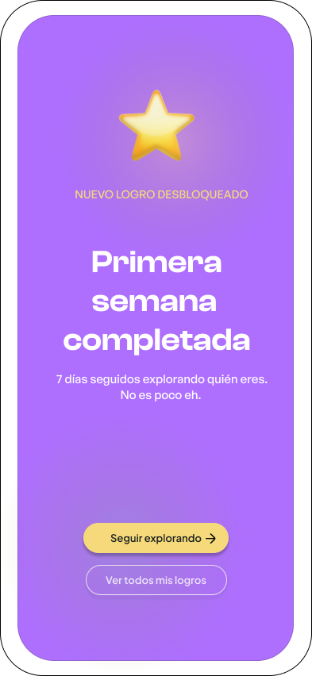
Entry point on madrid.es · Initial exploration · Achievement system
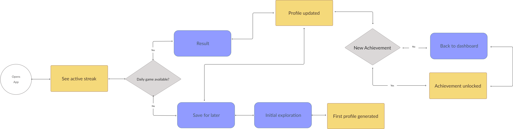
User flow — a recurring session
Color palette
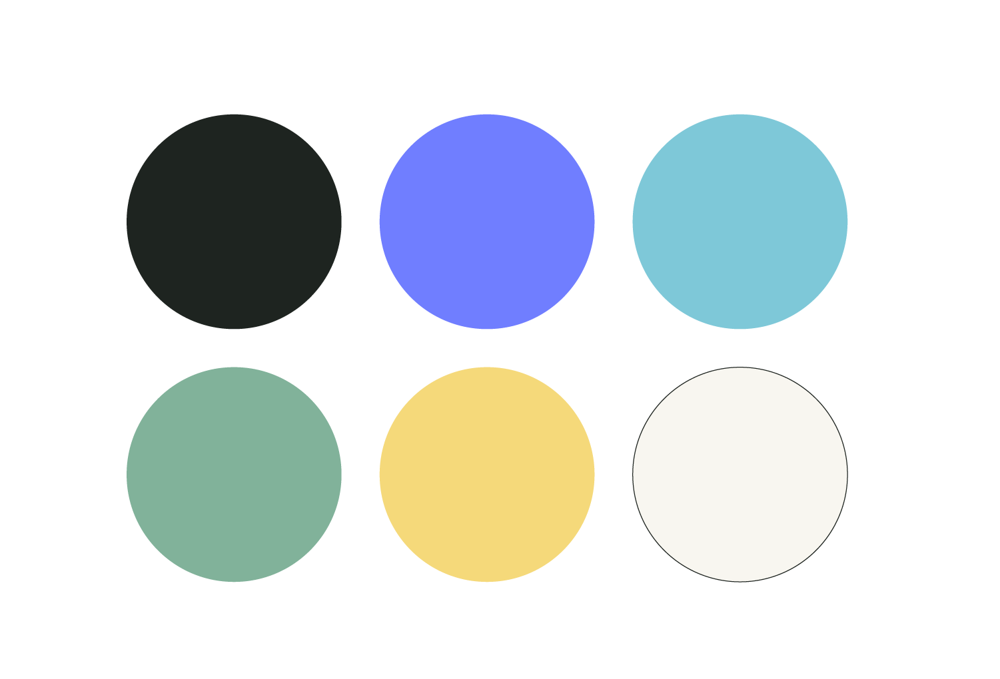
Typography
Visual voice and tone
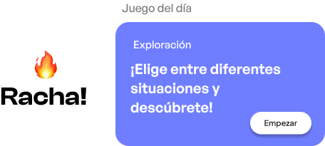
This project taught me that the best UX decisions come from the emotional context, not just the functional one. If I were to continue I'd run usability tests with real teenagers to validate the game mechanics before assuming they work, and also I'd push the gamification even further: adding illustrated, friendlier elements that match the kind of user we designed for — bringing warmth, dialling down the educational tone, and getting closer to the goal of being a genuinely useful tool for new generations.

Festival identity
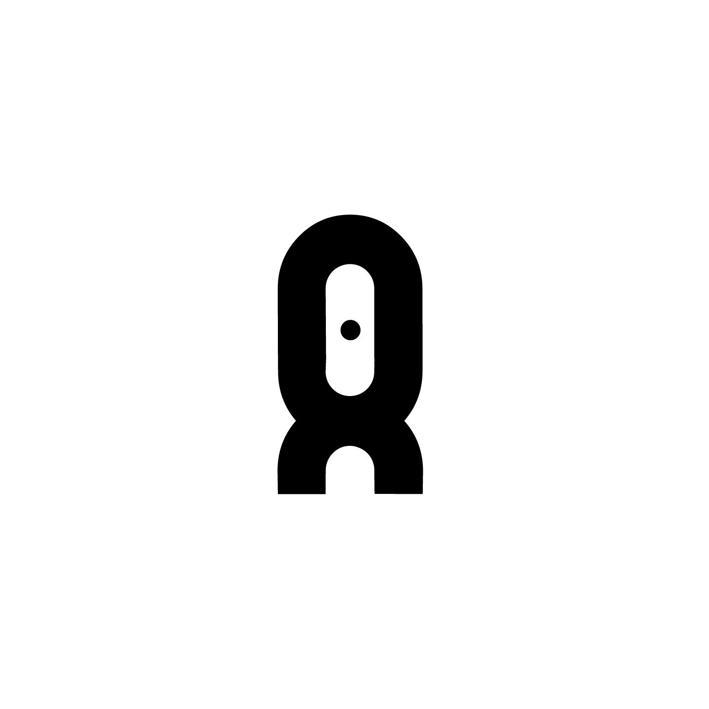
Brand identity
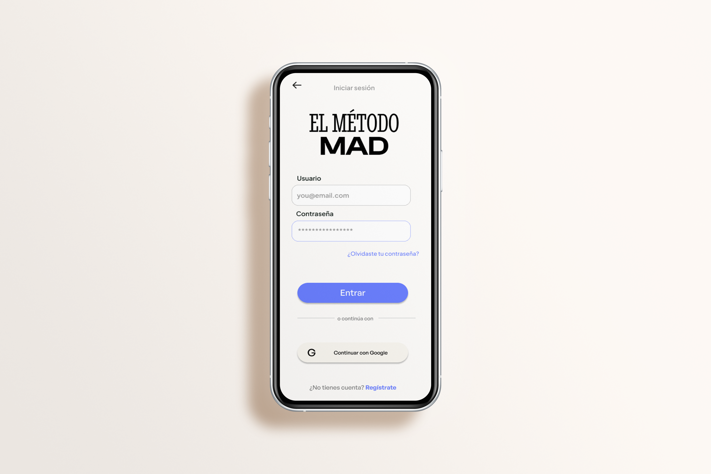
UX/UI Case study
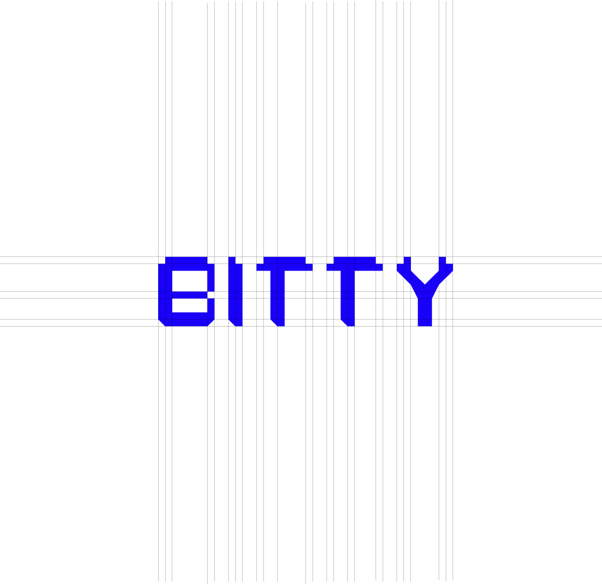
Pixel Font

UX Case study

Editorial design

Branding